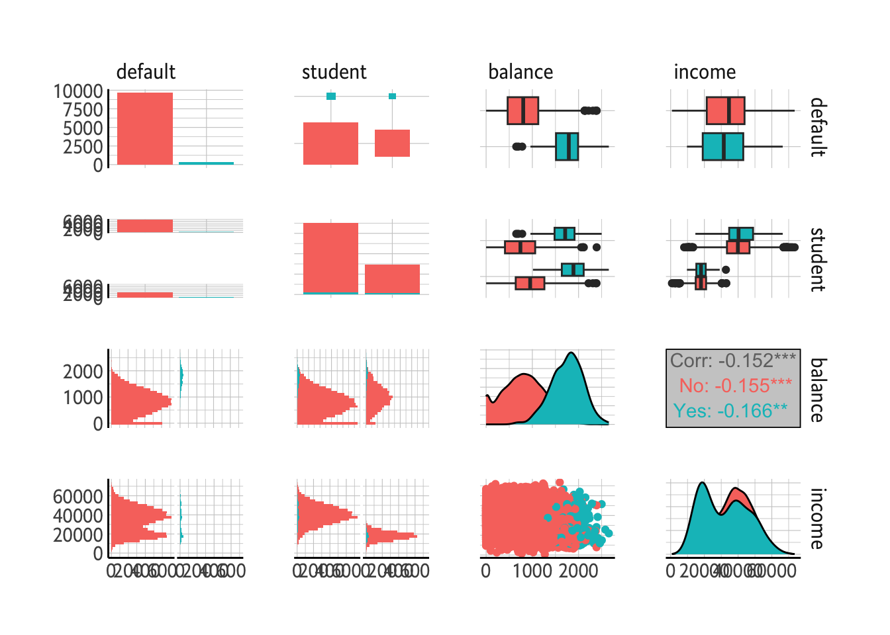
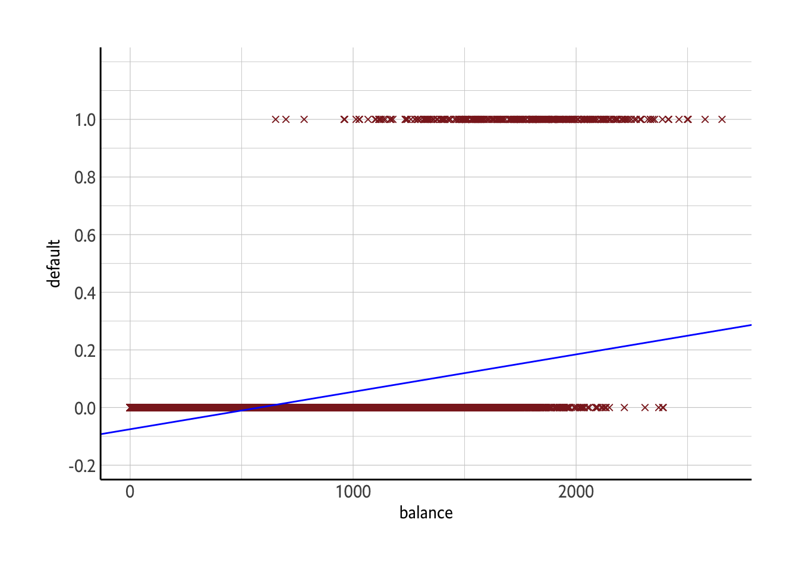

suppressPackageStartupMessages({
library(ISLR)
library(tidyverse)
library(ggthemes)
library(sjPlot)
library(corrplot)
library(tidymodels)
library(magrittr)
library(dotwhisker)
library(hrbrthemes)
library(patchwork)
library(GGally)
})
theme_set(theme_ipsum_ps(axis_title_size = 11 , axis_title_just = "c") + theme(axis.line = element_line(color ="black")))4 Classification
For many cases the response variable is qualitative, or categorical.
Clasification is the process for predicting qualitative responses; we are classifying an observation.
There are three main classifiers,classification techniques, mainly:
- Logistic regression
- Linear discriminant analysis
- K-nearest neighbors
We discuss more computer intensive methods is later chapters such as GAM(ch 7), trees, random forests, and boosting(ch 8), and support vector machines (ch 9).
4.1 An overview of Classsification
Here some clasffication problems
A person arrives at the emergency room with a set of symptoms that could possible be attributed to one f three medical conditions. Which of the three conditions does the individual have?
An online banking service must be able to determine whether or not a transaction being performed on the site is fraudulent, on the basis of the user’s IP adress, past transaction history and so forth.
In the bais of DNA sequence data for a number of patients with and without a given disease, a biologist would like to figure out which DNA mutations are disease causing and which are not.
Just like in LR , in the classification setting we have a set of training observations \((x_1,y_1), \dots, (x_n,y_n)\) what we can use to build a classfier. We want our classifier to perform not only on th training data, but also on test observations that are not used to train the classier.
We are going to use
Defaultdata set.
default = read_csv("./data/Default.csv")Rows: 10000 Columns: 4
── Column specification ────────────────────────────────────────────────────────
Delimiter: ","
chr (2): default, student
dbl (2): balance, income
ℹ Use `spec()` to retrieve the full column specification for this data.
ℹ Specify the column types or set `show_col_types = FALSE` to quiet this message.default %<>%
mutate_if(is.character, ~as.factor(.)) %>%
print()# A tibble: 10,000 × 4
default student balance income
<fct> <fct> <dbl> <dbl>
1 No No 730. 44362.
2 No Yes 817. 12106.
3 No No 1074. 31767.
4 No No 529. 35704.
5 No No 786. 38463.
6 No Yes 920. 7492.
7 No No 826. 24905.
8 No Yes 809. 17600.
9 No No 1161. 37469.
10 No No 0 29275.
# ℹ 9,990 more rowsWe are interested in predicting whether an individual will default on his or her credit card balance.
skimr::skim(default)| Name | default |
| Number of rows | 10000 |
| Number of columns | 4 |
| _______________________ | |
| Column type frequency: | |
| factor | 2 |
| numeric | 2 |
| ________________________ | |
| Group variables | None |
Variable type: factor
| skim_variable | n_missing | complete_rate | ordered | n_unique | top_counts |
|---|---|---|---|---|---|
| default | 0 | 1 | FALSE | 2 | No: 9667, Yes: 333 |
| student | 0 | 1 | FALSE | 2 | No: 7056, Yes: 2944 |
Variable type: numeric
| skim_variable | n_missing | complete_rate | mean | sd | p0 | p25 | p50 | p75 | p100 | hist |
|---|---|---|---|---|---|---|---|---|---|---|
| balance | 0 | 1 | 835.37 | 483.71 | 0.00 | 481.73 | 823.64 | 1166.31 | 2654.32 | ▆▇▅▁▁ |
| income | 0 | 1 | 33516.98 | 13336.64 | 771.97 | 21340.46 | 34552.64 | 43807.73 | 73554.23 | ▂▇▇▅▁ |
GGally::ggpairs(mapping = aes(color = default), data = default)`stat_bin()` using `bins = 30`. Pick better value with `binwidth`.
`stat_bin()` using `bins = 30`. Pick better value with `binwidth`.
`stat_bin()` using `bins = 30`. Pick better value with `binwidth`.
`stat_bin()` using `bins = 30`. Pick better value with `binwidth`.
default %>%
ggplot() + aes(x = balance, y = income, color = default, shape = default) + geom_point() + scale_color_manual(values = c("#6CA2C9","#BD5E2A")) + scale_shape_manual(values = c(1,3)) -> p1
default %>%
ggplot() + aes(x = default, y = balance, fill = default) + geom_boxplot() +
scale_fill_manual(values = c("#6CA2C9","#BD5E2A")) -> p2
default %>%
ggplot() + aes(x = default, y = income, fill = default) + geom_boxplot() +
scale_fill_manual(values = c("#6CA2C9","#BD5E2A")) -> p3
# gridExtra::grid.arrange(p1,p2,p3, nrow=1)
gridExtra::grid.arrange(p1,p2,p3, nrow=3)
# Top: The aanual incomes and montly credit card balances of a number of individuals. The individuals who defaulted on their credit card payments are shown in orange, and those who did not are shown in blue. Center: boxplots of balances as a function of default status. Bottom: boxplots of income as a functino of default status.people who default tend to have high credit card balances compared to not defaulted.
default %>%
count(default) %>%
mutate(port = n/sum(n))# A tibble: 2 × 3
default n port
<fct> <int> <dbl>
1 No 9667 0.967
2 Yes 333 0.0333# default rate is 3%default %>%
group_by(student,default) %>%
summarise(count = n()) %>%
mutate(port = count/sum(count))`summarise()` has grouped output by 'student'. You can override using the
`.groups` argument.# A tibble: 4 × 4
# Groups: student [2]
student default count port
<fct> <fct> <int> <dbl>
1 No No 6850 0.971
2 No Yes 206 0.0292
3 Yes No 2817 0.957
4 Yes Yes 127 0.0431# student are 2 times more likely to defaultIn this chapter we laern how to build a model to predict default(\(y\)), for any given value of balance (\(x_1\)), and income (\(x_2\)). Since \(Y\) is not quantitative, SLR is not appropriate.
4.2 Why Not Linear Regression?
Why is LR not appropriate here?
Suppose that we are trying to predict the mdeical condition of a patient in the emergency room on the basis of her symptoms. In this simplified example, therea rea three possible diagnoses: stroke, drug overdose, epileptic seizure. We could consider encoding these values as a quantitative respose variable \(Y\):
\[ Y = \begin{cases} 1 & \text{if stroke}; \\ 2 & \text{if drug overdose}; \\ 3 & \text{if epileptic seizure}. \end{cases} \]
We can now predict \(Y\) using \(x_1, \dots, \x_p\). However, this coding implies an ordering on the outcomes, putting drug overdose in between stroke and epileptic seizure and insisting that the difference between stroke and drug overdose is the same as the difference between drug overdose and epileptic seizure. In practice there is no particular reason that this needs to be the case. We could have ordered the cases differently, i.e. stroke to the 3 etc. Which implies a totally different relationship among the three conditions. All these combinations would produce different linear models that would lead to different set of predictions on test observations.
However, if the response variable’s values take on a natural ordering, such as mild, moderate, and severe, and we felt the gap between mild and moderate was similar to the gap between moderate and sever, then a 1,2,3 coding would be reasonable. **Unfortunaltely, in general there is no natural way to convert a qualitative response variable with more than two levels into a quantittative response that is ready for linear regression*.
For a binary(two level) qualitative response, the situation is easier. For instance consider only two possiblities for \(Y\):
\[ Y = \begin{cases} 0 & \text{if stroke} \\ 1 & \text{if drug overdose} \end{cases} \]
we can create a dummy varaible and fit a linar regression to this binary response and predict drug overdose if \(\hat{y}>0.5\) and stroke otherwise. However, if we use a linear regression our estimates might be outside of \([0,1]\), aking them hard to interpret as probabilities.
The dummy varaible approach coonot be easliy extended to accommodate qualitative responses with more than two levels. We prefer classification methods:
## Logistic Regression
Our default variable can have two values: Yes or No. Rather than modeling this response \(Y\) directly, logistic regression models the probability that \(Y\) belongs to a particular category.
For the default data logistic regression models the probability of default. For example, the probability of default given balance can be written as
\[
Pr(default = Yes | balance)
\] The values of \(Pr(default = Yes|balance)\), which we abbreviate \(p(balance)\), will range between 0 and 1. Then for any given value of balance, a prediction can be made for default. For example, we can predict \(default = Yes\) or any individaul for whom \(p(balance)>0.5\). Alternatively, if a company wishes to be conservative in predicting individuals who are at risk for default, then they may choose to use a lower threshold, such as \(p(balance)>0.1\).
4.2.1 The Logistic Model
How should we model the relationship between \(p(x) = Pr(y = 1| x)\) and \(x\)? (when we coded 0/1 for response values)
In section 4.2 we talked of using a linear regression model to represent these probabilities:
\[ p(x) = \beta_0 + \beta_1 x \] (4.1)
default %>%
mutate(default = ifelse(default == "Yes",1,0)) %>%
print() %>%
lm(default~balance,.) %>%
summary()# A tibble: 10,000 × 4
default student balance income
<dbl> <fct> <dbl> <dbl>
1 0 No 730. 44362.
2 0 Yes 817. 12106.
3 0 No 1074. 31767.
4 0 No 529. 35704.
5 0 No 786. 38463.
6 0 Yes 920. 7492.
7 0 No 826. 24905.
8 0 Yes 809. 17600.
9 0 No 1161. 37469.
10 0 No 0 29275.
# ℹ 9,990 more rows
Call:
lm(formula = default ~ balance, data = .)
Residuals:
Min 1Q Median 3Q Max
-0.23533 -0.06939 -0.02628 0.02004 0.99046
Coefficients:
Estimate Std. Error t value Pr(>|t|)
(Intercept) -7.519e-02 3.354e-03 -22.42 <2e-16 ***
balance 1.299e-04 3.475e-06 37.37 <2e-16 ***
---
Signif. codes: 0 '***' 0.001 '**' 0.01 '*' 0.05 '.' 0.1 ' ' 1
Residual standard error: 0.1681 on 9998 degrees of freedom
Multiple R-squared: 0.1226, Adjusted R-squared: 0.1225
F-statistic: 1397 on 1 and 9998 DF, p-value: < 2.2e-16default %>%
mutate(default = ifelse(default == "Yes",1,0)) %>%
lm(default~balance,.) -> lm_res
default %>%
mutate(default = ifelse(default == "Yes",1,0)) %>%
ggplot() + aes(x = balance, y = default) + geom_point(shape = 4, color = "brown4") +
geom_abline(intercept = lm_res$coefficients[1], slope = lm_res$coefficients[2], color = "blue") + scale_y_continuous(expand = c(0,0.25), breaks = seq(-0.2,1,by=0.2) )
The plot above is the same as plot on the left pane of 4.2. Here we see the problem with this approach, for balances close to zero, we predict a negative probability of default and if we predict for very large balances we would get values bigger than 1. These predictions are not sensible. This always happen for any time a straight line is fit to a binary response that is coded as 0 or 1, in pricpile we can always predict \(p(x)<0\) for some values of \(x\) and \(p(x)>1\) for others.
To avoid this problem we must model \(p(x)\) using a function that gives outputs between 0 and 1 for all values of \(x\). Many functions meet this description, however in logistis regression, we use logistic function
\[ p(x) = \frac{e^{\beta_0 + \beta_1 x}}{1 + e^{\beta_0 + \beta_1 x}} \] (4.2)
To fit the mode (4.2) we use a method called maximum likelihood, which we discuss in the next section. The right-hand panel of Figure 4.2 sows then fit of the logistic regression model to the defaultdata.
Notice that for low balances we now predict the probability of default as close to , but never below zero. Likewise for high balances we predict a default probability close to, but never above, one.
The logistic function will always produce an S-shaped curve of this form, and so regardless of the value of \(X\) we will obtain a sensible prediction.
After a bit of manipulation of (4.2) we find that
$$ \[\begin{align} p(x) &= \frac{e^{\beta_0 + \beta_1 x}}{1 + e^{\beta_0 + \beta_1 x}} \\ 1-p(x) &= 1- \frac{e^{\beta_0 + \beta_1 x}}{1 + e^{\beta_0 + \beta_1 x}} \\ 1- p(x) &= \frac{1}{1 + e^{\beta_0 + \beta_1 x}} \\ 1- p(x) \cdot e^{\beta_0 + \beta_1x} &= \frac{e^{\beta_0 + \beta_1 x}}{1 + e^{\beta_0 + \beta_1 x}}\\ 1-p(x) \cdot e^{\beta_0 + \beta_1 x} &= p(x) \\ \frac{p(x)}{1-p(x)} &= e^{\beta_0 + \beta_1} \space \space \space \space \space \space \space \space \space \space (4.3) \end{align}\] $$
the quantity \(p(x)/(1 - p(x))\) is called the odds, and can take on any value between 0 and \(\infty\). Values of the odds close to 0 and \(\infty\) indicate very low and very high probabilities of default, respectively.
For example, on average 1 in 4 people with an odds of 1/4 will default since \(p(x) = 0.2\) implies an ods of \(\frac{0.2}{1-0.2} = 1/4\). Likewise on average 9/10 wpeople with an odds of 9 will default since \(p(x) = 0.9\) implies an odds of \(\frac{0.9}{1-0.9} = 9\).
By taking the lograithm of both sides of (4.3) we arrive at
\[ \log(\frac{p(x)}{1-p(x)}) = \beta_0 + \beta_1 x \] (4.4)
the left-hand side is called the log-odds- or logit. We see that the logistic regression model (4.2) has a logit that is linear in \(X\).
Here increasing \(x\) by one unit changes the log odds by \(\beta_1\) (4.4), or it multiplies the odds by \(e^{\beta_1}\). But because the relationship between \(p(x)\) and \(x\) in (4.2) is not a straight line, \(\beta_1\) does not correspond to the change in \(p(x)\) associated with a one-unit increase in \(x\). The amount that \(p(x)\) changes due to a one-unit change in \(x\) will depend on the current value of \(x\). But regardless of the value of \(x\), if \(\beta_1\) is positive, then increasing \(x\) will be associated with increasing \(p(x)\), vice versa. We can see that in the right hand panel of Figure 4.2.
4.2.2 Estiamting the Regression Coefficients
\[ p(x) = \frac{e^{\beta_0 + \beta_1 x}}{1 + e^{\beta_0 + \beta_1}} \] (4.2) The coefficients of \(\beta_0\) and \(\beta_1\) are unknown, must be estimated based on the available training data. We are going to use maximum likelyhood method. The basic intuition begind using maximum likelihood to fit a logistic regression model is as follows: we seek estimates for \(\beta_0\) and \(\beta_1\) such that the predicted probability \(\hat{p}(x_i)\)} of default for each individual, using (4.2), corresponds as closely as possible to the individual’s observed default status. In other words, we try to find \(\hat{\beta_0}\) and \(\hat{\beta_1}\) such that plugging these estimates into the model for \(p(x)\),given in (4.2), yields a number close to 1 for all individuals who defaulted, and a number close to zero for all individuals who did not. We can formalize this mathematical equation with likelihood function
\[ l(\beta_0, \beta_1) = \prod_{i:y_i = 1}p(x_i) \prod_{i':y_{i'} = 0}(1-p(x_{i'})) \] (4.5)
The estimates \(\hat{\beta_0\) and \(\hat{\beta_1}\) are chosen to maximize this likelihood function.
# initialize model
logistic_reg() %>%
set_engine("glm") %>%
set_mode("classification") -> log_model
log_modelLogistic Regression Model Specification (classification)
Computational engine: glm # setup the recipe
default_recipe <- recipe(default ~ balance, data = default)
default_recipe── Recipe ──────────────────────────────────────────────────────────────────────── Inputs Number of variables by roleoutcome: 1
predictor: 1# set up the workflow
workflow() %>%
add_model(log_model) %>%
add_recipe(default_recipe) -> default_workflow
default_workflow══ Workflow ════════════════════════════════════════════════════════════════════
Preprocessor: Recipe
Model: logistic_reg()
── Preprocessor ────────────────────────────────────────────────────────────────
0 Recipe Steps
── Model ───────────────────────────────────────────────────────────────────────
Logistic Regression Model Specification (classification)
Computational engine: glm ## fit model
default_workflow %>%
fit(data = default) %>%
tidy(conf.int = T)# A tibble: 2 × 7
term estimate std.error statistic p.value conf.low conf.high
<chr> <dbl> <dbl> <dbl> <dbl> <dbl> <dbl>
1 (Intercept) -10.7 0.361 -29.5 3.62e-191 -11.4 -9.97
2 balance 0.00550 0.000220 25.0 1.98e-137 0.00508 0.00594# for the default data, estiamted coefficients of the logistic regression model that predicts the probability of default using balance. A one unit increase in balance is assocaited witnh an increase in the log odds of default by 0.0055 units.default_workflow %>%
fit(data = default) %>%
augment(new_data = default) %>%
ggplot() + aes(x = balance, y = default, color = .pred_class) + geom_point() + scale_color_ipsum()Lets have a look at the Logistic Regression results again:
## fit model
default_workflow %>%
fit(data = default) %>%
tidy(conf.int = T)# A tibble: 2 × 7
term estimate std.error statistic p.value conf.low conf.high
<chr> <dbl> <dbl> <dbl> <dbl> <dbl> <dbl>
1 (Intercept) -10.7 0.361 -29.5 3.62e-191 -11.4 -9.97
2 balance 0.00550 0.000220 25.0 1.98e-137 0.00508 0.00594# for the default data, estiamted coefficients of the logistic regression model that predicts the probability of default using balance. A one unit increase in balance is assocaited witnh an increase in the log odds of default by 0.0055 units.We can measure the accuracy of the coefficient estimates by computing their standard errors. The z-statistic in the above plays the same role as t statistic in linear regression output. They are calculated from \(\hat{\beta_i} / \text{SE}(\hat{\beta_i})\), and so a large(absolute) value of the z-statistic indicates evidence against the null hypothesis \(H_0: \beta_1 = 0\). This null hypothesis implies that \(p(x) = \frac{e^{\beta_0}}{1 + e^{\beta_0}}\). In other words, that the probability of default does not depend on blaance. p value is very low, we can reject \(H_0\); there is relationship between balance and probability of default. Intercept is not important here.
4.2.3 Making predictions
Once the coefficients have been estimated, we can compute the probability of default for any given credit card balance.
\[ \hat{p}(x) = \frac{e^{\hat{\beta_0} + \hat{\beta_1}x}}{1 +e^{\hat{\beta_0} + \hat{\beta_1}x}} = \frac{e^{-10.6513 + 0.0055 x}}{1 + e^{-10.6513 + 0.0055 x}} \]
so for example given income $1,000 the predicted possiblity of default is
exp(-10.6513 + 0.0055 * 1000) / (1 + exp(-10.6513 + 0.0055 * 1000))[1] 0.005758518which is below 1%. What about the probability of default for a person with $2,000 balance
exp(-10.6513 + 0.0055 * 2000) / (1 + exp(-10.6513 + 0.0055 * 2000))[1] 0.5863023much higher 58%.
We can get all the predictions for our training data set form
default_workflow %>%
fit(data=default) %>%
augment(new_data = default) %>% print() %>%
count(.pred_class)# A tibble: 10,000 × 7
default student balance income .pred_class .pred_No .pred_Yes
<fct> <fct> <dbl> <dbl> <fct> <dbl> <dbl>
1 No No 730. 44362. No 0.999 0.00131
2 No Yes 817. 12106. No 0.998 0.00211
3 No No 1074. 31767. No 0.991 0.00859
4 No No 529. 35704. No 1.00 0.000434
5 No No 786. 38463. No 0.998 0.00178
6 No Yes 920. 7492. No 0.996 0.00370
7 No No 826. 24905. No 0.998 0.00221
8 No Yes 809. 17600. No 0.998 0.00202
9 No No 1161. 37469. No 0.986 0.0138
10 No No 0 29275. No 1.00 0.0000237
# ℹ 9,990 more rows# A tibble: 2 × 2
.pred_class n
<fct> <int>
1 No 9858
2 Yes 142# we classified 142 cases to default
# originally
default %>%
count(default)# A tibble: 2 × 2
default n
<fct> <int>
1 No 9667
2 Yes 333# 333 cases are actually defaultWe can implement qualitative predictors to the logistic regression using the dummy variable approach.. Lets predict default by only student variable
\[ x = \begin{cases} 1 & \text{if student} \\ 0 & \text{if not student} \end{cases} \]
logistic_reg() %>%
set_engine("glm") %>%
set_mode("classification") -> log_model
default_recipe <- recipe(default ~ student, data = default)
workflow() %>%
add_model(log_model) %>%
add_recipe(default_recipe) -> default_workflow
default_workflow %>%
fit(data = default) %>%
tidy(conf.int = T)# A tibble: 2 × 7
term estimate std.error statistic p.value conf.low conf.high
<chr> <dbl> <dbl> <dbl> <dbl> <dbl> <dbl>
1 (Intercept) -3.50 0.0707 -49.6 0 -3.65 -3.37
2 studentYes 0.405 0.115 3.52 0.000431 0.177 0.629The coefficient is positive and the p value is statistically significant. This indicates that students tend to have higher default probabilities than non student:
\[ \widehat{Pr}(default = Yes | student = Yes) = \frac{e^{-3.50 + 0.4049 \times 1}}{1 + e^{-3.50 + 0.4049 \times 1}} = 0.0431 \]
\[ \widehat{Pr}(default = Yes | student = No) = \frac{e^{-3.50 + 0.4049 \times 0}}{1 + e^{-3.50 + 0.4049 \times 0}} = 0.0292 \]
4.2.4 Multiple Logistic Regression
We now consider the problem of predicting a binary response using a multiple predictors. We can generalize (4.4) as follows:
\[ \log\left(\frac{p(x)}{1-p(x)}\right) = \beta_0 + \beta_1x_1 + \dots + \beta_p x_p \] (4.6)
(4.6) can be written as
\[ p(x) = \frac{e^{\beta_0 + \beta_1x_1 + \dots + \beta_p x_p}}{1 + e^{\beta_0 + \beta_1x_1 + \dots + \beta_p x_p}} \] (4.7)
We again use maximum likelihood method to estimate \(\beta_0, \beta_1, \dots, \beta_p\).
Lets use all of our variables in our model
logistic_reg() %>%
set_engine("glm") %>%
set_mode("classification") -> log_model
recipe <- recipe(default ~ balance + income + student, data = default)
workflow() %>%
add_model(log_model) %>%
add_recipe(recipe) -> default_workflow
default_workflow %>%
fit(data = default) %>%
tidy() # A tibble: 4 × 5
term estimate std.error statistic p.value
<chr> <dbl> <dbl> <dbl> <dbl>
1 (Intercept) -10.9 0.492 -22.1 4.91e-108
2 balance 0.00574 0.000232 24.7 4.22e-135
3 income 0.00000303 0.00000820 0.370 7.12e- 1
4 studentYes -0.647 0.236 -2.74 6.19e- 3| term | estimate | std.error | statistic | p.value |
|---|---|---|---|---|
| (Intercept) | -10.8690452 | 0.4922555 | -22.080088 | 0.0000000 |
| balance | 0.0057365 | 0.0002319 | 24.737563 | 0.0000000 |
| income | 0.0000030 | 0.0000082 | 0.369815 | 0.7115203 |
| studentYes | -0.6467758 | 0.2362525 | -2.737646 | 0.0061881 |
Here there is a suprising result. According to the p-values balance and student variables are associted with the probability of default. However, coefficient for stundet dummy is negative; indicating that students are less likely to default than non-students. But this coefficint was positive in our previous analysis when we regressed probability of default by student: results showed that probability of default is twice as likely for students compared to non students.
Check out the fig 4.3. The orange and blue lines show the average default rates for students and non students, respectively, as a function of credit card balance. The nagive coefficient for student in the multiple logistic regression indicates that for a fixed value of balance and income a student is less likely to default than a non-student. We observe from the left hand panel that the student default ratge is at or below that of the nun student default rate for every value of balance. But the horizontal broken lines near the base of the plot, which show the default rates for students and non students averaged over all values of balance and income, suggest the opposite effect: the overall student default rate is higher than non student default rate. Consequently there is a positive coefficient for student in the single variable logistic regression output.
The right hand panel provies an explanation for this discrepancy: the varaibles student and blaance are correlated. Students tend to hold higher levels of debt, which is in turn assocaited with higer probability of default. In other words, students are more likely to have large credit card balances, which as we know from the left hand panel of figure 4.3 tend to be assocaited with high default rates. Thus, even though an individual student with a given credit card balance will tend to have a lower probability of default than a non student with the same credit card balance, the fact that students on the whole tend to have higher credit card balances means that overall students tend to default at a higher rate than non students. This is an important distinction. A student is riskier than a non student if no information about the student’s credit card balance is available. However, that student is less risky than a non student with the same credit card balance.
This simple example illustrates the dangers and subtleties assocaited with performing regressions involving only a single predictor when other predictors may als obe relevant. The results obtained using one predictor may be quite different from those obtained using multiple predictors, especially when there is correlation among the predictors. In general, the phenomenon seen in Figure 4.3 is known as confounding.
Lets put the estimates to our estimated probability function
$$ (x) =
{ 1 + e^{-10.86 + 0.00574 balance + 3e-6 income - 0.646 Student} } $$ We can make predictions: a student with a credit card balnce of $1,500 and an income of $40,000 has an estimated probability of default:
\[ \hat{p}(x)=\frac{ e^{-10.86 + 0.00574 \cdot 1,500 + 3e-6 \cdot 40,000 - 0.646 \cdot 1} } { e^{-10.86 + 0.00574 \cdot 1,500 + 3e-6 \cdot 40,000 - 0.646 \cdot 1} } = 0.05780859 \]
A non student with the same balance and income has an estiamted probability of default of
\[ \hat{p}(x)=\frac{ e^{-10.86 + 0.00574 \cdot 1,500 + 3e-6 \cdot 40,000 - 0.646 \cdot 0} } { e^{-10.86 + 0.00574 \cdot 1,500 + 3e-6 \cdot 40,000 - 0.646 \cdot 0} } = 0.1048655 \]
default_workflow %>%
fit(data = default) %>%
augment(new_data = tibble(income = 40000, balance = 1500, student = c("Yes","No")))# A tibble: 2 × 6
income balance student .pred_class .pred_No .pred_Yes
<dbl> <dbl> <chr> <fct> <dbl> <dbl>
1 40000 1500 Yes No 0.942 0.0579
2 40000 1500 No No 0.895 0.105 4.2.5 Logistic Regression for > 2 Response Classes
What if our response variable has more than two classes. Like medical condition in the emergency room: stroke, drug overdose, epileptic seizure. In this setting we wish to model both \(Pr(Y = stroke | x)\) and \(Pr(Y = drug \space overdose | x)\), with the remaining \(Pr(Y = epileptic \space seizure |x) = 1 - Pr(Y= stroke | x) - Pr(Y = drug \space overdose | x)\). We can do it my extending logistic regression but Linear Discriminant Analysis is much suitable for this task
4.3 Linear Discriminant Analysis
Logistic regression involves directly modeling \(Pr(Y = k | X = x)\) using the logistic function, given by (4.7) for the case of two response classes. In statistical jargon, we model the conditional distribution of the response \(Y\), given the predictor(s) \(X\).
We now consider an alternative and less direct approach to estimating these probabilities. In this alternative approach, we model the distribution of the predictors \(X\) separately in each of the response classes (i.e. given \(Y\)), and then use Bayes’ theorem to flip these around into estimates for \(Pr(Y = k | X = x)\). When these distributions are assumed to be normal, it turns out that the model is very similar in form to logistic regression.
Why do we need another method when we have logistic regression?
When the classes are well separated, the parameter estimates for the logistic regression model are surprisingly unstable. Linear discrimnant analysis does not suffer from this problem.
If n is small and the distribution of the predictors \(X\) is approximately normal in each of the classes the linear discriminant model is again more stable than th elogistic regression model
LDA is popular when we have more than two response classes.
4.3.1 Using Bayes’ Theorem for Classification
We want to classify an observation into one of \(K\) classes, where \(2 \leq K\). So \(Y\) can take on \(K\) possible distinct and unordered values. Let \(\pi_k\) represent the overall or prior probability that a randomly chosen observation comes from the \(k\)th class.; this is the probability that a given observation is associated with the kth category of the response variable \(Y\). Let \(f_k(x) \equiv Pr(X = x | Y = k)\) denote the density function of \(X\) for an observation that comes from the k th class. In other words \(f_k(x)\) is relatively large if there is a high probability that an observation in the k th class has \(X \approx x\), and \(f_k(x)\) is small if it is very unlikely that an observation in the kth class has \(X \approx x\). Then Bayes’s theorem states that
\[ Pr(Y = k | X = x) = \frac{ \pi_k\,f_k(x) } { \sum^K_{l = 1}\,\pi_l\,f_l(x) } \] (4.10)
We will use the abbreviation \(p_k(X) = Pr(Y = k | X)\). This suggests that instead of directly computing \(p_k(X)\) as Section 4.3.1, we can simply plug in estimates of \(\pi_k\) and \(f_k(X)\) into (4.10). In general, estimating \(\pi_k\) is easy if we have a random sample of \(Y\)s from the population: we simply compute the fraction of the training observations that belong to the kth class. However, etimating \(f_k(X)\) tends to be more challenging, unless we assume some simple forms for these densities. We refer to \(p_k(x)\) as the posterior probability than an observation \(X=x\) belongs to the kth class. That is, it is the probability that the observation belongs to the kth class, given the predictor value for that observation.
We know from Ch.2 that the Bayes classifier, which classifies an observation to the class for which \(p_k(X)\) is largest, has the lowest possible error rate out of all classifiers. Therefore, if we can find a way to estimate \(f_k(X)\) then we can develop a classifier that approximates the bayes classifier:
4.3.2 Linear Discriminant Analysis for p=1
Assume we have one predictor. We would like to obtain an estimate for \(f_k(x)\) that we can plug into (4.10) in order to estimate \(p_k(x)\). We will then classify an observation to the class for which \(p_k(x)\) is greatests. In order to estimate \(f_k(x)\) we will first make some assumptions about this form.
Suppose we assume \(f_k(x)\) is normal or Gaussian. In the one dimensional setting, the normal density takes the form
\[ f_k(x) = \frac{ 1 } { \sqrt{2\pi}\,\sigma_k }\,exp\,\left(-\frac{1}{2\sigma^2_k}(x - \mu_k)^2\right) \] (4.11)
where \(\mu_k\) and \(\sigma^2_k\) are the mean and variance parameters for the kth class. For now, let us further assume that \(\sigma_1^2=\dots=\sigma^2_K\): that is, there is shared variance term across all \(K\) classes, which for simplicty we can denote by \(\sigma^2\). Plugging (4.11) into (4.10) we find that
\[ p_k(x) = \frac{ \pi_k\,\frac{1}{\sqrt{2\pi}\,\sigma}\,exp(-\frac{1}{2\sigma^2}(x - \mu_k)^2) } { \sum_{l=1}^K \pi_l \frac{1}{\sqrt{2\pi}\sigma}\,exp(-\frac{1}{2\sigma^2}(x - \mu_l)^2) } \] (4.12)
The bayes classifier involves assigning an observation \(X=x\) to the class for which (4.12) is largest. Taking the log of (4.12) and rearranging the terms, it is not hard to show that this is equivalent to assigning the observation to the class for which
\[ \delta_k(x) = x \cdot \frac{\mu_k}{\sigma^2} \,- \frac{\mu_k^2}{2\sigma^2}\,+ \log(\pi_k) \] (4.13)
is largest. For instance if \(K = 2\) and \(\pi_1 = \pi_2\), then the Bayes clasffier assigns an obsetvation to classs 1 if \(2x(\mu_1 - \mu_2) > \mu_1^2 - \mu_2^2\), ann to class 2 otherwise. In this case, the Bayes desicion boundary corresponds to the point where
$$ x = =
$$ (4.14)
An example is shown in the left hand panel of fig 4.4
The two normal density functions that are displayed, \(f_1(x)\) and \(f_2(x)\), represent two distinct classes. The mean and the variance parameters for the two desity functions are \(\mu_1 = -1.25, \space \mu_2 = 1.25\), and \(\sigma_1^2 = \sigma_2^2 = 1\). The two densities overlap, and so given that \(X=x\), there is some uncertainty about the class to which observation belongs. If we assume that an observation is equally likely to come from either class–that is \(\pi_1 = \pi_2 = 0.5\)– then by inspection of (4.14), we see that the Bayes classfier assigns the observation to class 1 if \(x<0\) and class 2 otherwise. Note that in this case, we can compute the Bayes classfier because we know that \(X\) is drawn from a gaussian distribution within each class, and we know all of the parameters involved. In a real-life situation we are not able to calcualte Bayes classifier.
In practice, even if we are quite certain of our assumption that \(X\) is drawn from a Gaussian distribution within each class, we still have to estimate the parameters \(\mu_1, \dots, \mu_K,\space \pi_1,\dots, \pi_K,\) and \(\sigma^2\). The linear discriminant analysis (LDA) method approximates the bayes classfier vy plugging estimates fro \(\pi_k, \mu_k\) and \(\sigma^2\) into (4.13). In particular the following estimates are used.:
$$ \[\begin{align} \hat{\mu}_k &= \frac{1}{n_k}\sum_{i:y_i=k} x_i \\ \hat{\sigma}^2 &= \frac{1}{n-K}\sum^K_{k=1} \sum_{i:y_i =k}(x_i - \hat{\mu}_k)^2 \end{align}\] $$ (4.15) Important
where n is the total number of training observations, and n_k is the number of training observations in the kth class. The estimate for \(\mu_k\) is simply the average of all the training observations from the kth class, while \(\hat{\sigma}^2\) can be seen as a weighted average of the sample variances for each of the \(K\) classes. Sometimes we have knowledge of the class membership probabilities \(\pi_1, \dots, \pi_K\), which can be used directly. In the absence of any additional information, LDA estimates \(\pi_K\) using the proportion of the training observations that belong to the kth class. In other words,
\[ \pi_k = n_k /n \] The LDA classifer plugs the estimates given in (4.15) and (4.16) into (4.13), and assigns an observation \(X=x\) to the class for which
\[ \hat{\delta}(x) = x \cdot \,\frac{\hat{u}_k}{\hat{\sigma}^2} \,-\,\frac{\hat{u}^2_k}{2\,\hat{\sigma}^2}\,+\,\log(\hat{\pi}_k) \] (4.17)
is largest. The word linear in classfier’s name stems from the fact that discriminant functions \(\hat{\delta}_k(x)\) in (4.17) are linear functions of \(x\).
The right hand panel of Fig 4.4 displays a histogram of a random sample \(n=20\) observations from each class. To implement LDA, we behan by estimating \(\pi_k, \mu_k, \sigma^2\) using (4.15) and (4.16). We then computed the desicion boundy, shown as a black solid line, that results from assigning an observation to the clas for which (4.17) is largest.
set.seed(12)
a = rnorm(n=20, mean = -1.25, sd =1)
b = rnorm(n=20, mean=1.25, sd =1)
d = rbind(tibble(x = a, class = 1),tibble(x = b, class =2))
d %>% ggplot() + aes(x = x, color = class, group = class) + geom_density(show.legend = F) d %>%
group_by(class) %>%
summarise(mean_hat = mean(x), var_hat = sd(x)^2) # A tibble: 2 × 3
class mean_hat var_hat
<dbl> <dbl> <dbl>
1 1 -1.58 0.751
2 2 1.35 0.781d %>%
group_by(class) %>%
summarise(count = n()) %>%
mutate(pi_hat = count/sum(count))# A tibble: 2 × 3
class count pi_hat
<dbl> <int> <dbl>
1 1 20 0.5
2 2 20 0.5d %>%
mutate(d_k_c1 = x * (-1.58/0.751) - (-1.58^2/(2*0.751)) + log(0.5),
d_k_c2 = x * (1.35 / 0.781) - (1.35^2/(2*0.781)) + log(0.5)) %>%
mutate(pred.class = factor(ifelse(d_k_c1 > d_k_c2,1,2)), class = factor(class)) %>%
conf_mat(truth = class, estimate = pred.class) %>%
autoplot(type = "heatmap")library(discrim)
Attaching package: 'discrim'The following object is masked from 'package:dials':
smoothnessd %>% mutate(class = factor(class)) -> d
discrim_linear() %>%
set_mode("classification") %>%
set_engine("MASS") -> lda_spec
lda_recipe <- recipe(class~x,data =d)
workflow() %>%
add_model(lda_spec) %>%
add_recipe(lda_recipe) -> lda_workflow
lda_workflow %>%
fit(data = d) %>%
augment(new_data=d) # A tibble: 40 × 5
x class .pred_class .pred_1 .pred_2
<dbl> <fct> <fct> <dbl> <dbl>
1 -2.73 1 1 1.00 0.0000459
2 0.327 1 2 0.155 0.845
3 -2.21 1 1 1.00 0.000340
4 -2.17 1 1 1.00 0.000391
5 -3.25 1 1 1.00 0.00000637
6 -1.52 1 1 0.995 0.00463
7 -1.57 1 1 0.996 0.00393
8 -1.88 1 1 0.999 0.00119
9 -1.36 1 1 0.991 0.00869
10 -0.822 1 1 0.937 0.0633
# ℹ 30 more rows